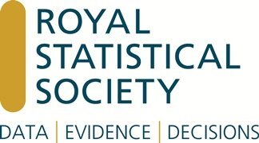

DataFest 2021 Sponsors
ASA DataFestTM at University of Edinburgh cannot run without your support! Since we're running the event virtually this year our financial costs will be low but we need lots of consultant hours so we hope that you'll consider supporting us with your time this year! Click here as a consultant.
Click here to find out more about how you can support DataFest at University of Edinburgh, and don't hesitate to contact us with sponsorship questions.
Huge thanks to our sponsors, and we're hoping to add more to this list!

The School of Mathematics at The University of Edinburgh is situated in the James Clerk Maxwell Building within the King's Buildings campus. There are over 50 academic and related staff and around 60 research students. The School also runs a number of MSc programmes. Undergraduate courses are given to around 2000 students in any one year.
 RStudio’s mission is to create free and open-source software for data science, scientific research, and technical communication. We do this to enhance the production and consumption of knowledge by everyone, regardless of economic means, and to facilitate collaboration and reproducible research, both of which are critical to the integrity and efficacy of work in science, education, government, and industry. RStudio also produces RStudio Team, a modular platform of commercial software products that give organizations the confidence to adopt R, Python and other open-source data science software at scale - for the benefit of many people, to leverage large amounts of data, to integrate with existing enterprise systems, platforms, and processes, or be compliant with security practices and standards - along with online services to make it easier to learn and use them over the web.
RStudio’s mission is to create free and open-source software for data science, scientific research, and technical communication. We do this to enhance the production and consumption of knowledge by everyone, regardless of economic means, and to facilitate collaboration and reproducible research, both of which are critical to the integrity and efficacy of work in science, education, government, and industry. RStudio also produces RStudio Team, a modular platform of commercial software products that give organizations the confidence to adopt R, Python and other open-source data science software at scale - for the benefit of many people, to leverage large amounts of data, to integrate with existing enterprise systems, platforms, and processes, or be compliant with security practices and standards - along with online services to make it easier to learn and use them over the web.
 Gather is building virtual spaces for people to live and interact more effectively online, while having more fun. We combine video-calling with a 2D map, letting you walk around and talk to the other people right next to you. Our creation tools also let you make your own custom, interactive spaces!
Gather is building virtual spaces for people to live and interact more effectively online, while having more fun. We combine video-calling with a 2D map, letting you walk around and talk to the other people right next to you. Our creation tools also let you make your own custom, interactive spaces!
Centre for Statistics unites data-driven researchers from across Edinburgh. The Centre promotes Statistics and its applications, the development and application of novel statistical techniques, and it leads the organization of a variety of Statistics-related events, such as David Finney Lectures, Statistics Afternoons, and Research Days. The Centre has more than 70 members from a variety of data-driven fields, and it has a Statistical Consultancy Unit providing bespoke consultancy and training.

The American Statistical Association is the world’s largest community of statisticians, the “Big Tent for Statistics.” It is the second-oldest, continuously operating professional association in the country. Since it was founded in Boston in 1839, the ASA has supported excellence in the development, application, and dissemination of statistical science through meetings, publications, membership services, education, accreditation, and advocacy.

Founded in 1834, the The Royal Statistical Society are one of the world’s leading organisations advocating for the importance of statistics and data. With members in the UK and across the world, they are a professional body for all statisticians and data analysts. They advocate for the key role of statistics and data in society, and work to ensure that policy formulation and decision making are informed by evidence for the public good.